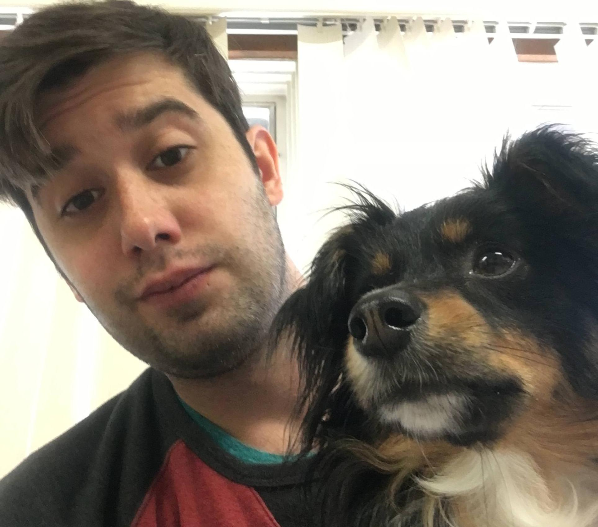

City: Burlington
State: Vermont
Bio: Dylan Morosini is a 27 year old web developer born and raised in Vermont. After working in manufactoring at
IBM for years he realized how interested he was in web development and back-end programming. Soon after he was enrolled
in the Burlington Code Academy, a three month 40 hours a week intensive bootcamp. During which he built strong skills
and knowledge in many programming languages including html, css, and javascript.